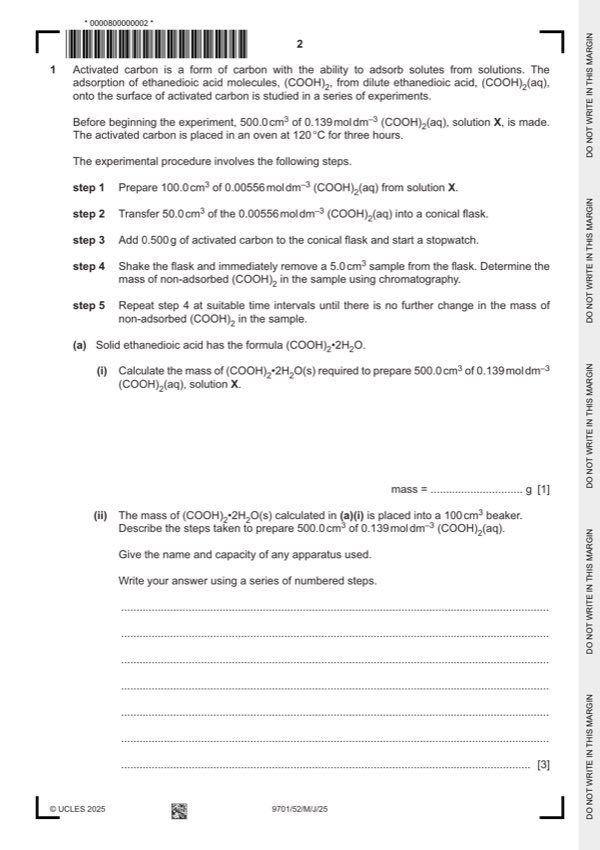

Question 1

Original paper page 2
Part 1(a)(i) — solution
8.76 (g) 1
Mark points
- Include the ideas shown in the solution above.
Part 1(a)(ii) — solution
Answer: AND · AND
- [M1] dissolve the solid / ethanedioic acid (in the beaker) using (a small volume of) (distilled) water 3
- [M2] transfer / add to a (500 cm3 volumetric) flask
- [M3] top the 500 cm3 volumetric flask up to mark (with distilled water)
Mark points
- [M1] dissolve the solid / ethanedioic acid (in the beaker) using (a small volume of) (distilled) water 3
- [M2] transfer / add to a (500 cm3 volumetric) flask
- [M3] top the 500 cm3 volumetric flask up to mark (with distilled water)
Part 1(b) — solution
wear chemically resistant gloves 1
Mark points
- Include the ideas shown in the solution above.
Part 1(c) — solution
to remove water from (the surface of) the activated carbon 1
Mark points
- Include the ideas shown in the solution above.
Part 1(d) — solution
4.0 (cm3) 1
Mark points
- Include the ideas shown in the solution above.
Part 1(e) — solution
burette 1
Mark points
- Include the ideas shown in the solution above.
Part 1(f) — solution
to ensure a uniformly mixed sample 1
University Press & Assessment 2025 Page 7 of 10
9701/52 Cambridge International AS & A Level – Mark Scheme May/June 2025
Mark points
- Include the ideas shown in the solution above.
Part 1(g)(i) — solution
Answer: 1
1
time / mass of non-adsorbed mass of (COOH)2
mins (COOH)2 in 5.0 cm3 adsorbed by activated
sample / mg carbon in 5.0 cm3
sample / mg
Mark points
- Correct result: 1
Part 1(g)(ii) — solution
- [M1] all points plotted correctly 2
- [M2] smooth curved line of best fit passing close to all points except marked anomaly
Mark points
- [M1] all points plotted correctly 2
- [M2] smooth curved line of best fit passing close to all points except marked anomaly
Part 1(g)(iii) — solution
time (of sample removal) 1
Mark points
- Include the ideas shown in the solution above.
Part 1(g)(iv) — solution
temperature 1
Mark points
- Include the ideas shown in the solution above.
Part 1(g)(v) — solution
Answer: AND
anomalous point circled (at 30 mins) 1
AND
the actual time (of removing sample) was less than recorded time (30 minutes)
University Press & Assessment 2025 Page 8 of 10
9701/52 Cambridge International AS & A Level – Mark Scheme May/June 2025
Mark points
- Correct result: AND
Part 1(h)(i) — solution
- [M1] co-ordinates correctly recorded from line given in Fig 1.2 3
- [M2] gradient calculated to at least two significant figures
- [M3] units = g mg–1
Mark points
- [M1] co-ordinates correctly recorded from line given in Fig 1.2 3
- [M2] gradient calculated to at least two significant figures
- [M3] units = g mg–1
Part 1(h)(i) — solution
Answer: AND · AND
- = 100% = 9.2%
Mark points
- = 100% = 9.2%